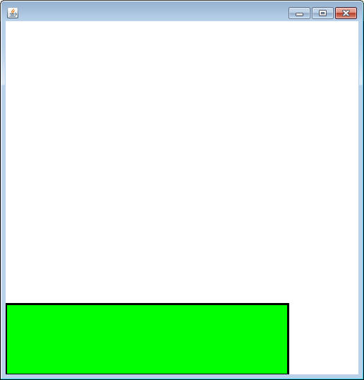

It's time to create two class that are going to do a little interacting with each other on a SaccoWindow
The Platform class:
The Platform class is going to be another class that represents a rectangle.
The only instance fields needed are ints for the x,y,width, and height of the rectangle.
The constructor should take in four ints and assign them to the appropriate instance fields.
Add a paintSelf method, which uses the x,y, width, and height to draw a rectangle of a color of your choosing.
Add a method with the following header:
public BoundingBox getBounds()
This method will construct and return a new BoundingBox with the instance fields instance fields of the platform.
Use the Runner below to test your program. It uses a SaccoWindow to place a platform on the bottom portion of the window.

import sacco.*;
public class JumpManWorld extends SaccoWindow
{
private Platform plat;
public JumpManWorld()
{
plat = new Platform(0,400,400,100);
}
public void paintWindow(Canvas c)
{
plat.paintSelf(c);
}
public static void main()
{
JumpManWorld world = new JumpManWorld();
world.showWindow();
}
} |
The JumpMan class
This class will be a little bit different than the Platform class, but have some similar attributes.
Instance fields:
doubles for x and y: Not ints. We are going to store the x and y as
doubles so that we can move it very slowly.
ints for width and height
doubles named fallSpeed and gravity
a Picture named myPic to represent the JumpMan
Constructor:
The Constructor should take in an x and y and apply them to the x and y instance
fields.
The width and height should be set to 48 and 96
fallSpeed should be set to 0 and gravity should be set to 5
The Picture will be initialized with the following two lines:
myPic = Picture.loadFromJar("mariosprites.png").getSubPicture(112,16,16,32).resize(48,96); myPic.flipHorizontal();
Methods:
Add accessor methods getX(), getY(), getWidth(), and getHeight()
Add mutator methods setX( double tmpX), setY(double tmpY), and setFallSpeed(double speed)
Add a paintSelf method that paints myPic at x,y. Since the x and y are doubles, you will have to do some casting.
Add a getBounds method that is the same as the one in the Platform class. It will also need casting.
Go back to the JumpManWorld class. Add the JumpMan in the same way
that the Platform was added.
- Create an instance field
- Construct a new JumpMan at 50,50 (it's not that important.
- in the paintWIndow method, ask the JumpMan to paint itself
Before moving on, test the program to make sure that the image appears on the same sindow as the platform.
Moving the JumpMan:
In order to test out this project fully, we're going to need to have some control over where the JumpMan is positioned. Go to the SaccoWindow and override the onMousePress method:
public void onMousePress(MouseEvent m)
We essentially want to move the JumpMan to the location that the mouse is clicked. Extract the mouse's x and y and use it to set the x and y of the JumpMan. Also, set the fallSpeed of the JumpMan to 0. This is an important step for later.
Test your program out by running it and clicking around to make sure that the JumpMan is moved when you click. It's alright that it's just the upper left corner, this function does not need to be pretty.
Falling JumpMan:
Right now the JumpMan stays exactly where you click. We want to
simulate some gravity for JumpMan. Add to the JumpMan class a method named
fall, which takes in no parameters and does two things.
1) Adds fallSpeed to the y coordinate. This will cause the JumpMan
to move down the screen.
2) According to science, when you fall your speed increases due to
gravity. You should also increase the fallSpeed variable by the gravity
variable. This means that the next time that
fall() is
called, the fallSpeed will be a little larger.
Go to the SaccoWindow. Now that the fall method is in place, we just need to call it using a timer. Override the onTimerTick method:
public void onTimerTick()
For now, inside this method you should simply call the JumpMan's fall method.
The timer won't start cycling until you tell the SaccoWindow to start. Go to the main method and call the start method just after the showWindow method.
Test out your program. Now when you click the JumpMan should fall down the screen. He will fall completely out of sight, but you can get him back by clicking on the window.
Collision:
Now it's time to put our BoundingBoxes to work. Currently the
onTimerTick method just tells the JumpMan to fall. After that you need to
add code that will:
- Check to see if calling fall caused the JumpMan to overlap the Platform
- if it did, move the JumpMan so that he's standing on
top of the Platform
-set the JumpMan's fallSpeed to 0
The important thing is that you use the getBounds method to get the BoundingBox
out of both the JumpMan and the Platform. Then you can use the overlaps
method to determine if they overlap each other. When setting the y of the
JumpMan, use the Platform's BoundinBox to get the y of the Platform, and don't forget to accommodate for
the JumpMan's height.
Test out the program! Hopefully when the JumpMan lands on the Platform he sticks to it.
Making the JumpMan Jump:
Now that we've got a JumpMan that will land on our platform, it's time to give him a little bit of action.
Add to the JumpMan class a method named jump(). This method should simply set the fallSpeed to a negative number. For now set it to -40, but you can go back later if he's not jumping high enough. Don't be afraid to set the fallSpeed to a negative, since gravity is constantly being added to the fallSpeed, it will be a positive number in no time.
Now it's time to make the JumpMan jump on command. To do this we'll override a new method of the SaccoWindow class
public void onKeyPress(int keyCode)
Similar to the onMousePress method, this method is called every time that a key is pressed on the keyboard. The way that you can tell which key is pressed is encoded in the int that's passed along. Each key gets it's own keyCode.
The keyCode for the the up arrow is 38. Use an if statement to call the JumpMan's jump method if the up arrow was pressed.
Test it out! Put the JumpMan on the Platform and hit the up arrow. Hopefully he does some jumping. You can tweak the JumpMan's gravity field to make his fall increase faseter and you can modify the jump method to make his initial jump higher.
This is not a perfect jumping system. You'll notice that when you hold down the up arrow the JumpMan will keep jumping. For now we'll call this a feature of the game.